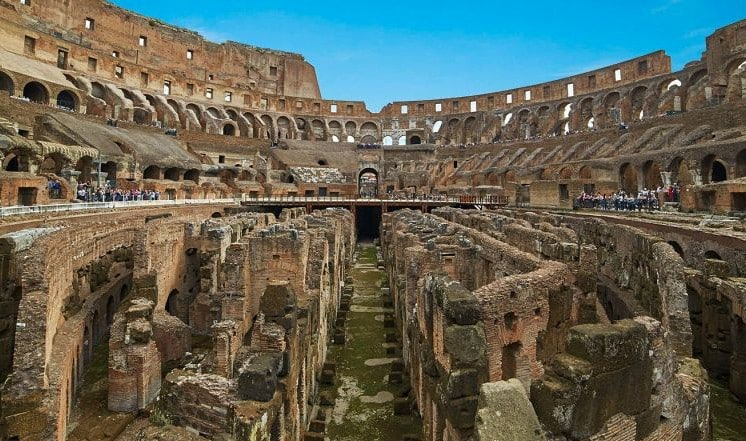
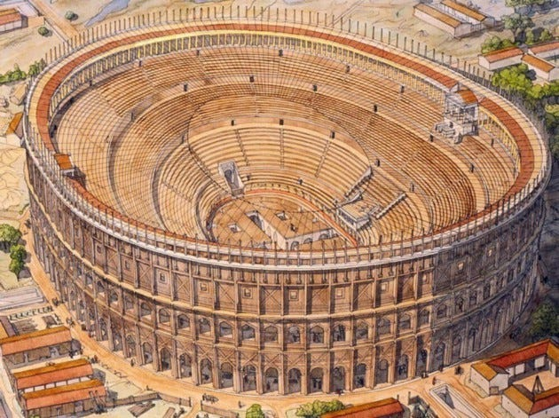
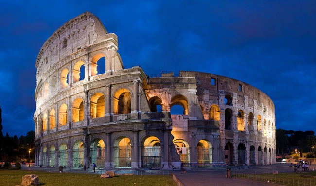
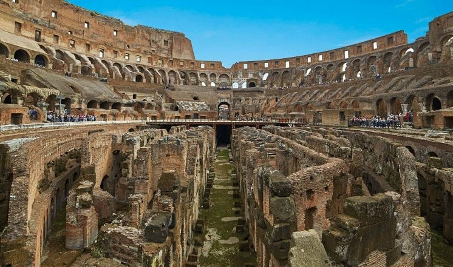
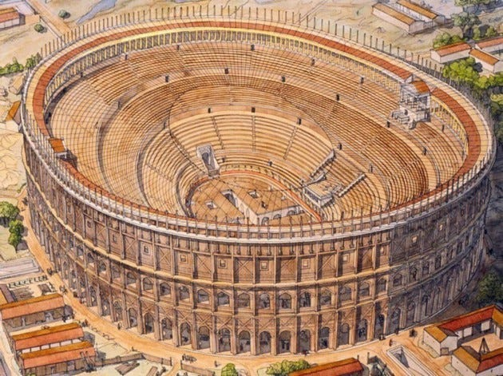
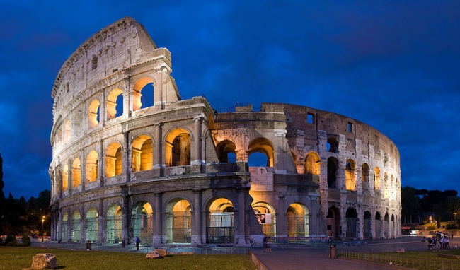

Colosseum
Colosseum-ul, cunoscut și sub numele de Amfiteatrul Flavian, este una dintre cele mai faimoase și impresionante structuri ale Romei antice, simbolizând măreția și ingeniozitatea Imperiului Roman. Construit între anii 70-80 d.Hr. sub împărații Vespasian și Titus, acest amfiteatru uriaș putea găzdui între 50.000 și 80.000 de spectatori. Era locul principal pentru spectacolele publice, cum ar fi luptele de gladiatori, vânătorile de animale sălbatice și reconstituirile bătăliilor celebre. Designul său inovator, cu patru niveluri de arcade și sisteme complexe de coridoare subterane (hypogeum), a demonstrat avansul tehnologic și capacitatea inginerească a romanilor.
Construcția Colosseum-ului a fost realizată din travertin, beton roman și cărămizi, iar fațada sa impresionantă este decorată cu coloane dorice, ionice și corintice. Sistemul său ingenios de subsoluri și lifturi permitea organizarea spectacolelor într-un mod spectaculos, ridicând gladiatori și animale direct pe arenă. Intrarea era gratuită pentru cetățenii romani, iar evenimentele aveau rolul de a distra populația și de a reafirma puterea autorităților. Amfiteatrul servea și ca un simbol politic, reflectând relația complexă dintre conducători și poporul roman.
În prezent, Colosseum-ul este unul dintre cele mai vizitate obiective turistice din lume, atrăgând milioane de vizitatori anual. Deși a suferit daune semnificative din cauza cutremurelor și a extragerii de materiale de construcție în Evul Mediu, structura sa rămâne impresionantă. Colosseum-ul este nu doar o mărturie a măreției Imperiului Roman, ci și un simbol universal al rezistenței și al istoriei. Patrimoniul său cultural continuă să inspire și să fascineze, fiind un loc de reflecție asupra trecutului și a valorilor civilizației romane.